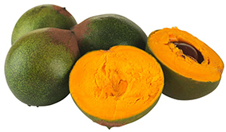
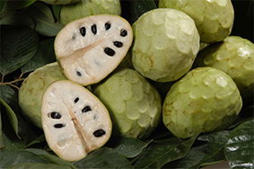
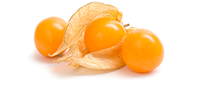
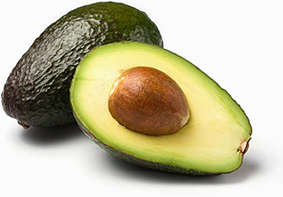

La lúcuma: es conrea des de l’època prehispànica i el seu valor gastronòmic és molt alt. El seu sabor és únic i increïble, és utilitzada en postres, dolços i com no esmentar el gelat de lúcuma, un dels sabors de gelats més preuats pels peruans.
La xirimoia: el seu nom és deu als vocables quechues “chiri” fred i "moya" llavors, ja que és una fruita que germina amb temperatures baixes en elevades altituds. Avui és una de les fruites més apreciades del món i és conrea a gairebé tota Amèrica, a Europa i Àfrica.
El aguaymanto: aquesta planta oriünda del Perú va créixer de forma silvestre i abundant durant l’imperi incaic formant part dela seva dieta. En l’actualitat es conrea a diversos països, ja que la seva demanda s’ha incrementat a escala internacional.
La palta: fruita d’origen peruà. El nom palta s’origina en la paraula quítxua palta. La palta s’utilitza en la gastronomia peruana en innombrables i diverses formes ja sigui com amanida, salses, sandvitxos, com a farcit a la famosa causa i el còctel de gambetes entre d’altres.
